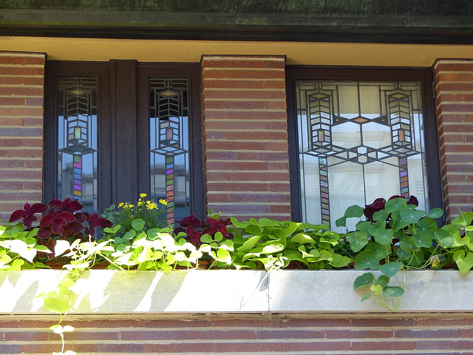
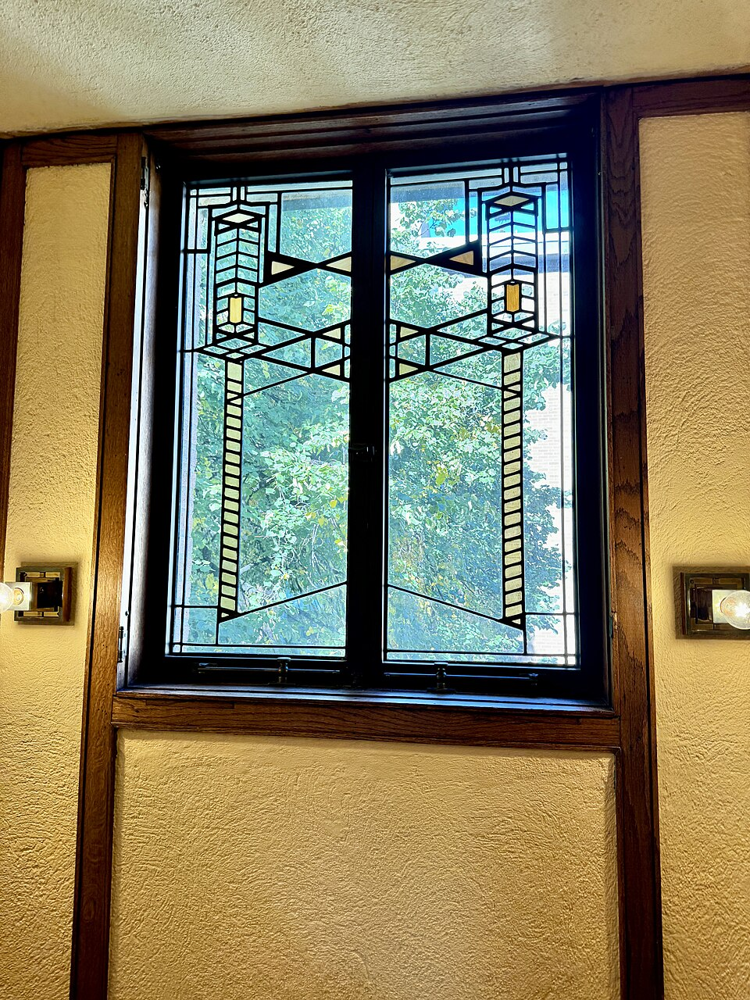
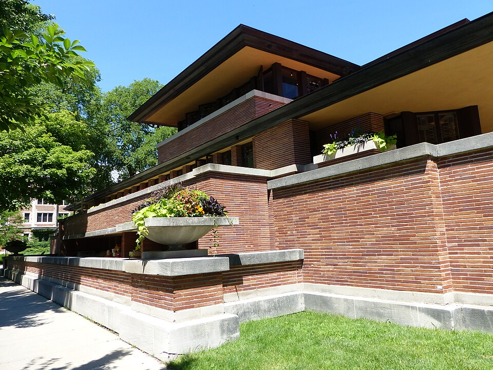
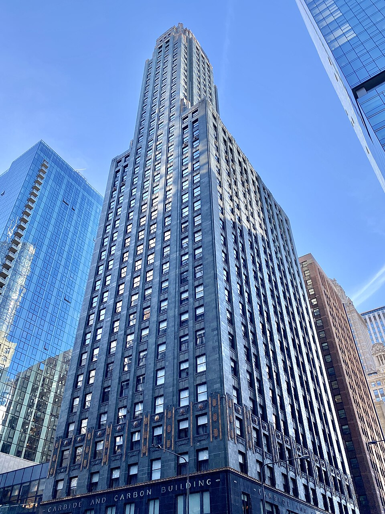
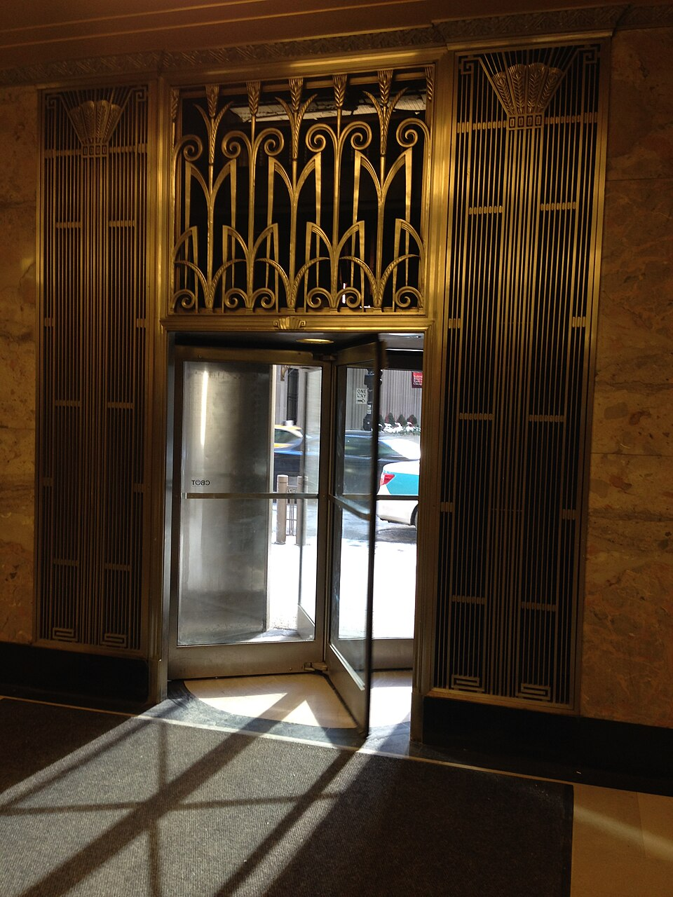

Board 01 · 27 artifacts
Prairie Lines
Frank Lloyd Wright · Robie House. Roman brick, deep eaves, limestone ledges and amber art glass — the Prairie School as realized in Chicago’s Robie House (1910) and the Wright works around it.
Open the board →


Board 02 · 29 artifacts
Gilded Age of Speed
Art Deco · Chicago & beyond. Sunbursts, setbacks and chrome. Black granite, gold leaf and glowing marble — the confident glamour of the machine age, from the towers of Chicago’s Loop and Michigan Avenue to New York and Paris.
Open the board →


Board 03 · 27 artifacts
Plywood & Plastic
Mid-Century Modern · Charles & Ray Eames. Molded plywood, fiberglass shells, wire and walnut. Optimistic, approachable design for modern living — made good by the details.
Open the board →